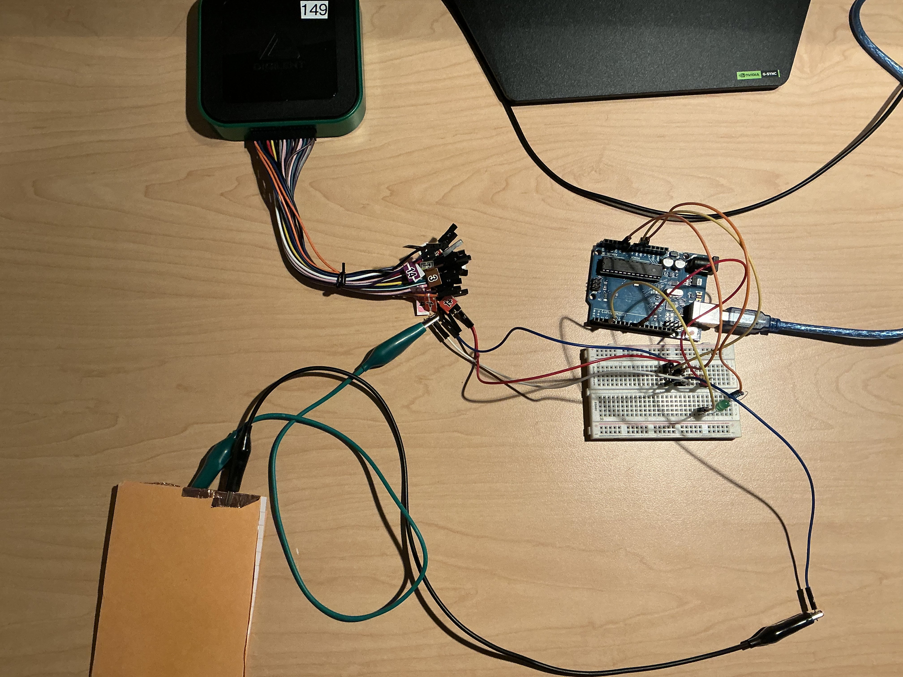
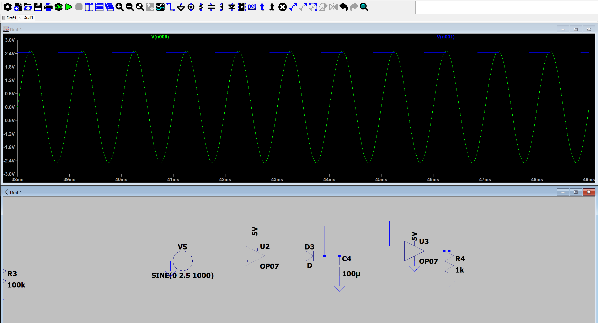

Random Projects
A collection of innovative electronics projects showcasing various technical skills and creative problem-solving.

Touch Sensor
A DIY capacitive touch sensor using Arduino and RC circuit principles, demonstrating practical applications of electrical engineering concepts.
Read More

Amplifier
Custom-designed audio amplifier circuit exploring signal processing and analog electronics principles.
Read More

Peak Detector
Advanced signal analysis circuit designed to identify and measure peak values in electrical signals.
Read More